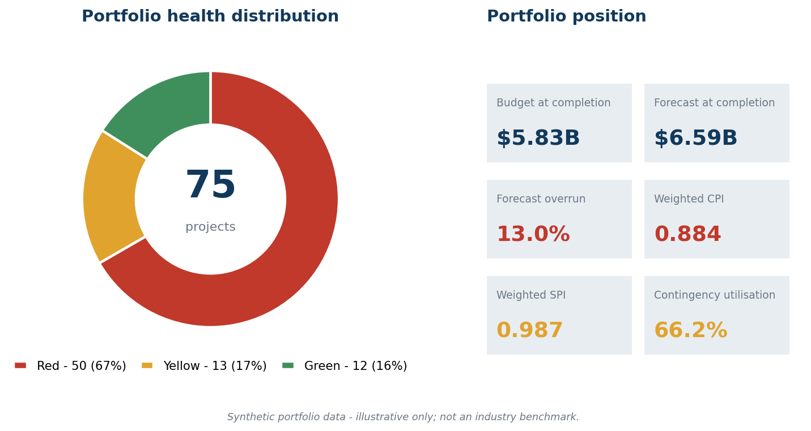
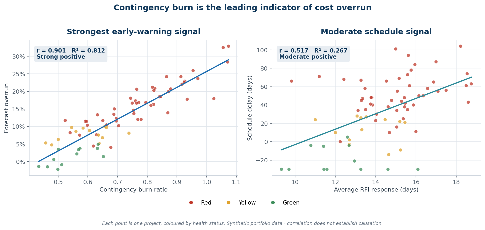

Which project-controls metrics move first — early enough to intervene? An end-to-end analysis of cost and schedule performance across a 75-project, $5.83B portfolio.
48 months of earned-value data, change orders and RFI logs across 75 projects.

Five results that shaped the recommendations.

Full write-ups, source data and query code.
The full narrative walkthrough with all seven charts and interpretation.
A shorter framing of the analytics services the study demonstrates.
Formal report covering all six analysis phases end to end.
Schema, data-quality checks, analytical views and query library.
Eleven analytical tables behind every figure on this page.
How the dataset was constructed and what it cannot be used to claim.